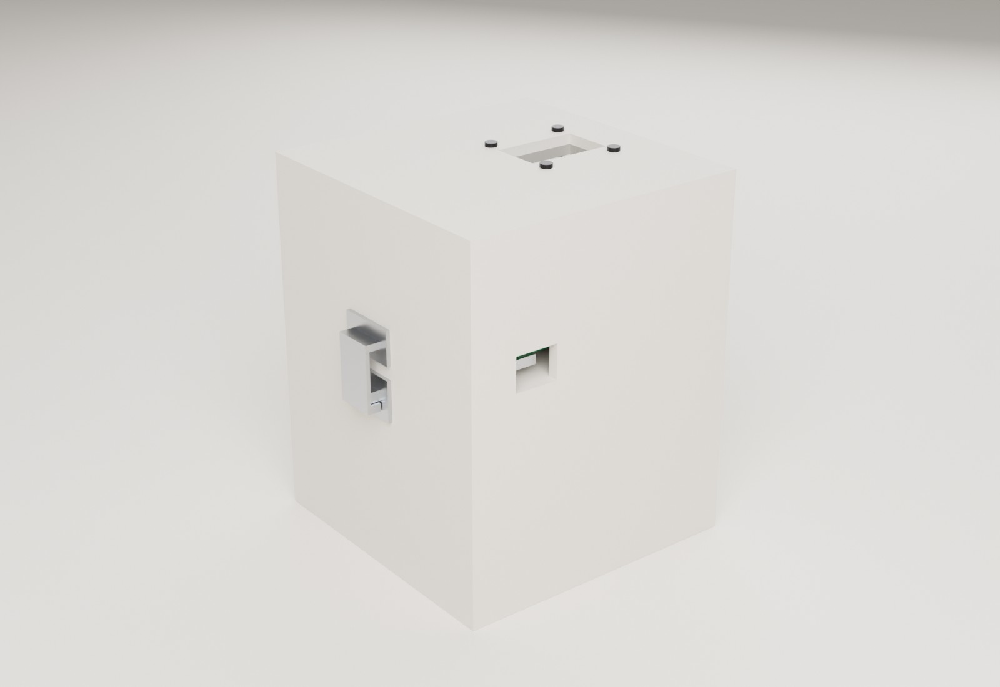
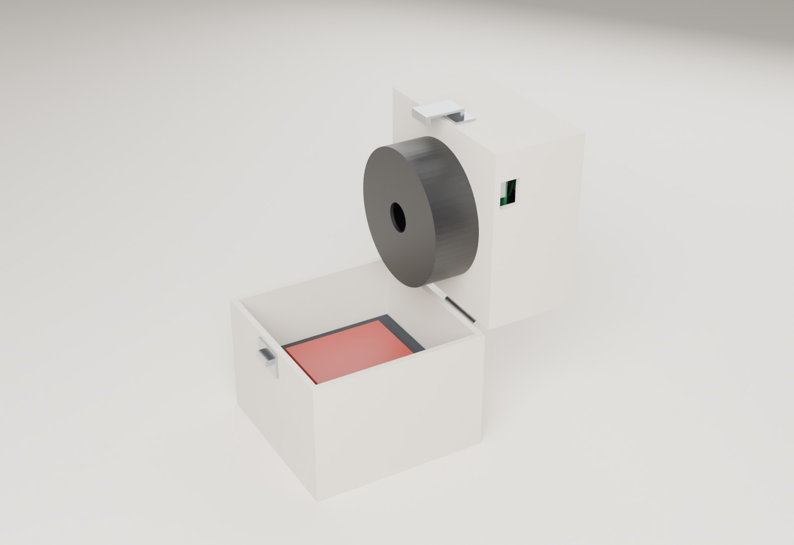
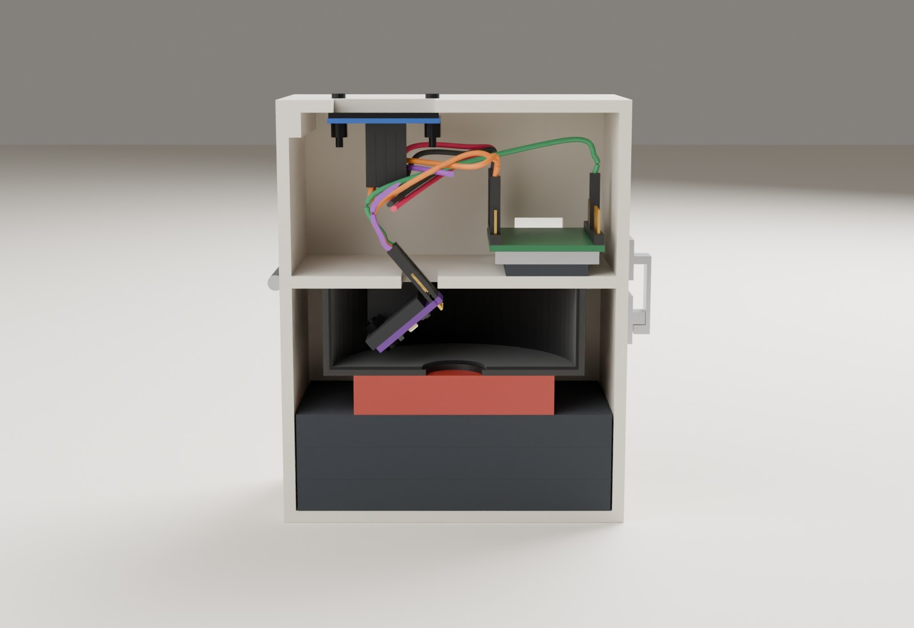
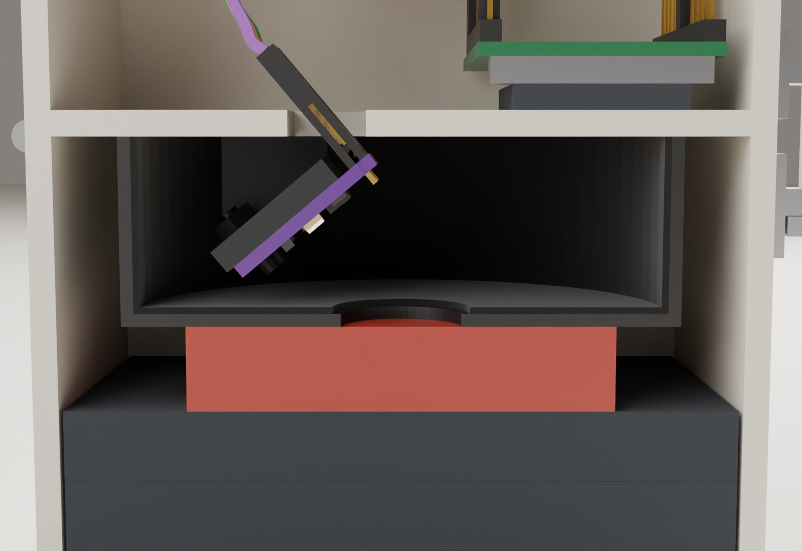
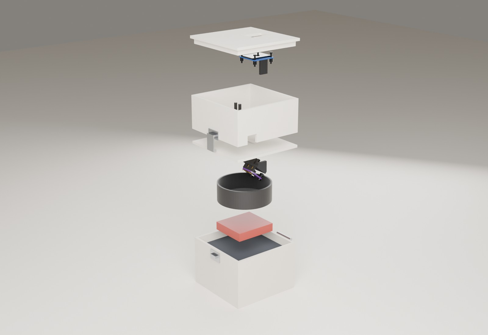
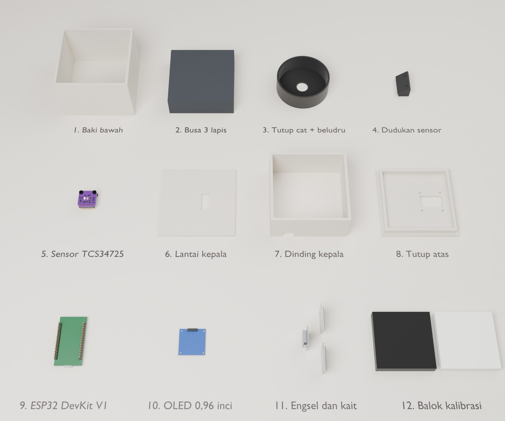

1. Inti rancangan
Cara kerja
Buka kepala, letakkan irisan daging 10 mm di atas busa, tutup, kunci kaitnya, tekan Ambil. Busa mendorong daging rata ke muka tutup cat, jadi jarak ke sensor dan tekanan selalu sama. Cahaya luar terhalang tiga lapis: dinding baki, tutup cat, dan daging itu sendiri yang menutup lubang ukur. Sisanya dibuang firmware dengan membaca sekali saat LED menyala dan sekali saat LED mati.
Ukuran tertutup 86 x 86 x 106 mm (tanpa engsel dan kait). Berat sekitar 160 g bila memakai PVC busa (foamboard), sekitar 310 g bila PVC padat.
Koreksi dari Lyra: miring 15° tidak cukup
Sebelumnya Lyra menyarankan papan sensor dimiringkan sekitar 15° dengan ganjal mur. Perhitungan jalan cahaya untuk desain ini menunjukkan saran itu salah: pada 15° kilap daging basah masih jatuh di dalam lubang ukur dan menambah sekitar 60 % ke kanal hijau. Pada 40° titik kilap jatuh 3,2 mm di luar tepi lubang. Karena itu papan dipasang miring 40° di atas dudukan pelat dan pipi.
Hitungan: desain/optik_jepit.py, pantulan tunggal, permukaan Lambert, kilap 2 % seperti air. Angka ini perkiraan, bukan pengukuran.
| Letak papan sensor | Kilap dari tepi lubang | Kilap / sinyal daging (G) | Sinyal daging | Dinding hitam / daging (beludru) | (cat doff) |
|---|---|---|---|---|---|
| Datar di tengah (desain D dengan LED bawaan) | -5,4 mm (di dalam) | 0,61 | 1,00 | 0,27 | 1,09 |
| Miring 15° | -2,7 mm (di dalam) | 0,62 | 0,99 | 0,30 | 1,18 |
| Miring 30° | +0,9 mm | 0 | 0,93 | 0,38 | 1,53 |
| Miring 40° (dipilih) | +3,1 mm | 0 | 0,86 | 0,52 | 2,06 |
Kilap tidak bisa dibuang dengan kalibrasi karena berubah-ubah menurut basahnya daging. Pantulan dinding hitam tetap besarnya, jadi dibuang dengan kalibrasi hitam. Beludru hitam membuatnya 4 kali lebih kecil daripada cat doff.
2. Model 3D interaktif
Geser Buka engsel untuk melihat cara memasukkan daging. Pilih Potong: tengah (Y) untuk melihat papan sensor miring di dalam tutup cat.
3. Gambar kerja
Potongan tengah, alat tertutup. 1 daging, 2 busa, 3 tutup cat, 4 sensor, 5 pipi (garis putus, di belakang bidang potong), 6 soket dupont lewat jendela kabel, 7 ESP32, 8 OLED, 9 engsel, 10 kait, 11 lantai baki. Semua ukuran dalam mm.
Ruang ukur. Chip berada 10 mm di belakang pusat lubang dan 11,9 mm di atas muka tutup cat. Jalan kilap (merah) mengenai muka hitam, bukan daging.
Lantai kepala dilihat dari atas. Jendela kabel x 47 sampai 56 mm dari depan, y 32,5 sampai 53 mm dari kiri. Pipi direkatkan di sisi bawah lantai pada x 52,1 sampai 65 dan y 29 sampai 32 dan 53,4 sampai 56,4 mm.
Kepala dibuka 100°. Titik berat alat tetap di atas alas baki sampai sudut ini (dihitung untuk PVC busa dan PVC padat), jadi alat tidak terguling ke belakang.
4. Pola potong 1:1
Buka 5_pola_1banding1.svg dan cetak di kertas A4 dengan skala 100 %. Ukur garis uji 50 mm dengan penggaris sebelum memakai pola.
5. Render Blender






Berkas Blender: desain/jepit/model/jepit.blend (setiap komponen objek terpisah, dikelompokkan dalam koleksi Baki bawah, Kepala, dan Aksesori). Putar objek Poros engsel pada sumbu Y untuk membuka kepala. Scene kedua, Katalog komponen, berisi setiap komponen yang dibaringkan. Model glTF: model/jepit.glb dan model/katalog.glb.
6. Bahan dan potongan
Potongan lembaran PVC 3 mm
| Bagian | Ukuran (mm) | Jumlah | Catatan |
|---|---|---|---|
| Lantai baki | 86 x 86 | 1 | |
| Dinding depan baki | 86 x 57 | 1 | |
| Dinding belakang baki | 86 x 57 | 1 | |
| Lantai kepala | 86 x 86 | 1 | jendela 9 x 20,5 |
| Dinding depan kepala | 86 x 40 | 1 | |
| Dinding belakang kepala | 86 x 40 | 1 | |
| Tutup atas | 86 x 86 | 1 | jendela 25 x 15, 4 lubang Ø 2,2 |
| Dinding kiri baki | 80 x 57 | 1 | |
| Dinding kanan baki | 80 x 57 | 1 | |
| Dinding kiri kepala | 80 x 40 | 1 | takik USB 13 x 10 |
| Dinding kanan kepala | 80 x 40 | 1 | |
| Bibir tutup atas | 79,4 x 6 | 2 | |
| Bibir tutup atas | 74 x 6 | 2 | |
| Pelat dudukan sensor (PVC hitam atau dicat hitam doff) | 27,3 x 14,8 | 1 | 2 lubang Ø 2,8 |
| Pipi penyangga (trapesium, lihat pola) (PVC hitam atau dicat hitam doff) | 12,9 x 13,4 | 2 | sisi miring 40° |
Luas total sekitar 569,8 cm², kira-kira selembar 25 x 25 cm. Ditambah 6 keping 60 x 60 mm untuk dua balok kalibrasi (3 lapis masing-masing).
Bahan lain
- ESP32 DOIT DevKit V1, TCS34725, OLED SSD1306 0,96 inci (sudah ada)
- Tutup cat semprot Ø 65 mm (sudah ada)
- Busa ati atau EVA lunak hitam, 3 lembar 78 x 78 x 10 mm
- Kertas beludru hitam (flocking) sekitar 20 x 20 cm. Pengganti: kain flanel hitam, atau cat semprot hitam doff
- 2 engsel kupu-kupu 25 mm, 1 kait kotak kecil, tali nilon 15 cm (pembatas buka)
- 2 baut M2,5 x 10 hitam + mur (sensor), 4 baut M2 x 12 + 8 mur (OLED), 8 baut M3 x 10 + mur (engsel)
- 9 kabel dupont betina-betina 10 cm
- Lem PVC atau lem tembak, silikon hitam, selotip hitam, busa dobel tape 3 mm
- Kertas HVS putih doff dan beludru hitam untuk tatakan kalibrasi
- Plastik wrap (satu lembar baru tiap sampel)
Sambungan kabel
| ESP32 | TCS34725 | OLED | Catatan |
|---|---|---|---|
| 3V3 | VIN | VCC | LED bawaan dinyalakan regulator 3,3 V di papan sensor, jadi 3V3 cukup |
| GND | GND | GND | |
| GPIO 21 | SDA | SDA | |
| GPIO 22 | SCL | SCL | |
| GPIO 26 | LED | HIGH = LED menyala, LOW = mati | |
| 3V3, INT | Tidak dipakai |
Urutan pin header sensor menurut skema Adafruit: VIN, GND, 3V3, SCL, SDA, INT, LED. Modul tiruan bisa berbeda, jadi baca tulisan di papanmu.
7. Langkah merakit
- Cetak pola 1:1Periksa garis uji 50 mm. Tempel pola di PVC dengan selotip kertas.
- Potong panel PVCIkuti daftar potongan. Amplas tepi sampai lurus dan siku. Periksa dengan penggaris siku sebelum mengelem.
- Siapkan tutup catLilitkan selotip di sekeliling tutup 22 mm dari muka sebagai garis potong, lalu gergaji. Bor lubang ukur di pusat muka bertahap (4, 8, 12 mm), lalu kikir sampai Ø 14 dan haluskan tepinya. Jangan cat muka luarnya.
- Lapisi bagian dalam tutup catTempel kertas beludru hitam di muka dalam (sisakan lubang Ø 16) dan di dinding. Kalau memakai cat doff, semprot 2 lapis tipis dan biarkan kering sekitar sehari sampai tidak berbau.
- Buat dudukan miringBor 2 lubang Ø 2,8 di pelat dudukan sesuai pola. Rekatkan kedua pipi di punggung pelat, di sisi tepi panjangnya, dengan sisi miring 40° menempel pelat.
- Pasang sensorBaut papan sensor ke pelat dengan 2 baut M2,5 hitam dari sisi komponen, mur di punggung pelat. Header menghadap punggung. Colok 5 soket dupont di VIN, GND, SCL, SDA, dan LED.
- Siapkan lantai kepalaPotong jendela kabel 9 x 20,5 mm sesuai pola dan denah. Tandai pusat tutup cat di sisi bawah lantai: 43 mm dari depan dan 43 mm dari kiri.
- Rekatkan dudukan di bawah lantaiMasukkan soket dupont lewat jendela dari bawah, lalu rekatkan sisi atas pipi ke lantai pada posisi denah. Chip harus menghadap ke depan dan ke bawah, ke arah pusat lubang.
- Periksa, lalu rekatkan tutup catLetakkan tutup cat di atas tanda pusat dan intip lewat lubang Ø 14: chip harus terlihat di sisi belakang lubang. Kalau sudah benar, rekatkan tepi tutup cat dengan silikon hitam di sekelilingnya.
- Rakit baki dan kotak kepalaBaki: lantai dan 4 dinding. Kepala: 4 dinding di atas lantai kepala. Potong takik USB 13 x 10 mm di tepi bawah dinding kiri kepala, pusatnya 20 mm dari depan. Lem bibir di sisi bawah tutup atas.
- Pasang ESP32 dan OLEDESP32 terbalik di atas busa dobel tape, colokan USB menghadap takik. Tutup lampu merah dayanya dengan selotip hitam. OLED dibaut ke tutup atas menghadap jendela, dengan ganjal 4 mm (2 mur M2) di tiap baut.
- Sambung kabel dan tutup jendelaPasang kabel sesuai tabel. Tutup jendela kabel dari atas dengan selotip hitam di sekeliling kabel, supaya cahaya dari dalam kotak tidak bocor ke ruang ukur.
- Engsel, kait, tali pembatasTempatkan kepala di atas baki. Pasang 2 engsel di sisi belakang dengan baut M3 dan mur, poros tepat di garis sambungan. Pasang kait di sisi depan. Ikat tali pembatas antara sisi kepala dan sisi baki supaya kepala berhenti di sekitar 100°.
- Masukkan busa, unggah firmware, ujiTiga lapis busa di baki. Unggah firmware (pin 21, 22, 26), lalu jalankan uji di bagian 8.
8. Cara memakai dan uji penerimaan
Setiap pengukuran
- Kalibrasi sekali per sesiBalok putih di atas busa, tutup, kalibrasi putih. Balok hitam, tutup, kalibrasi hitam.
- Siapkan dagingPotong setebal 10 mm dan seluas minimal 30 x 30 mm. Letakkan di tengah busa yang sudah dilapisi plastik wrap baru.
- Tutup dan kunciTutup kepala, kunci kait, tunggu 3 detik supaya LED stabil, lalu tekan Ambil.
- BersihkanBuka, ganti plastik wrap, lap muka tutup cat dengan tisu alkohol, tunggu kering.
Uji penerimaan
| Uji | Lulus bila |
|---|---|
| Balok hitam, 3 kali | R, G, B masing-masing 10 atau kurang |
| Lampu ruangan nyala lalu mati | Selisih R/G 0,02 atau kurang |
| Kilap: daging basah, lalu daging yang sama dilap tisu | Selisih R/G 0,03 atau kurang |
| Ulangan: buka-tutup 5 kali, daging sama | Simpangan R/G 0,03 atau kurang |
| Daging segar 10 mm | R/G 1,4 atau lebih (alat lama 1,1) |
| LED: balok putih tiap menit, 15 menit | Perubahan 2 % atau kurang |
9. Yang belum diketahui
- Tebal lembaran PVC dan jenisnya (busa atau padat). Rancangan memakai 3 mm.
- Diameter dalam tutup cat (dianggap 62 mm) dan tebal mukanya (dianggap 1,5 mm).
- Arah header di papan sensormu. Rancangan membutuhkan pin menghadap ke punggung papan supaya soket dupont bisa naik lewat jendela kabel.
- Apakah modul sensormu memakai tata letak Adafruit (chip dan LED di posisi yang sama). Modul ungu tiruan biasanya meniru tata letak ini, tetapi belum pasti.
- Kekerasan busa yang tepat dan seberapa banyak daging menonjol ke lubang Ø 14 saat ditekan. Tonjolan besar mengurangi jarak kilap dari tepi lubang. Uji ulangan dan uji kilap akan memperlihatkannya.
- Hitungan optik hanya memperhitungkan satu kali pantulan. Pantulan berganda di dalam ruang ukur diabaikan.
- Daging menyentuh plastik wrap dan tutup cat yang bukan bahan pangan. Sampel ukur jangan dimakan.
Sumber ukuran: desain/jepit/geometri.py (satu sumber untuk gambar, model 3D, dan Blender). Pemeriksaan otomatis: tidak ada bagian yang bertabrakan pada sudut buka 0 sampai 105°, chip dan LED melihat seluruh lubang kecuali garis paling tepi, titik berat tetap di atas alas sampai 100°.